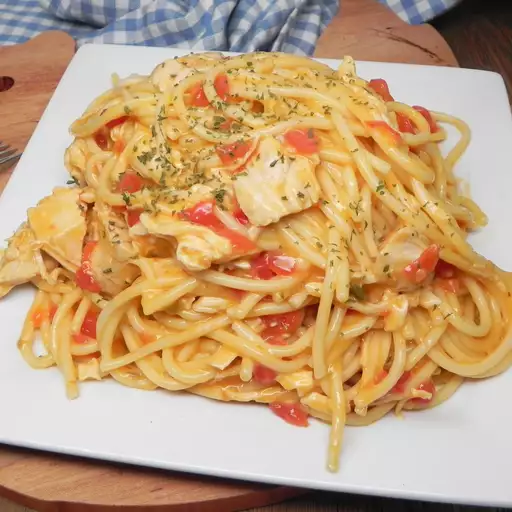

Espaguetis con Pollo

Los espaguetis con pollo son un plato clásico y reconfortante que combina la sencillez de la
pasta con el sabor versátil del pollo. Es una comida popular en muchas culturas y se puede preparar de diversas
maneras, desde recetas sencillas con ajo y aceite hasta versiones más elaboradas con salsas cremosas o de tomate.
- Pasta: El ingrediente principal son los espaguetis, una pasta larga y delgada hecha de sémola
de trigo duro y agua. Se cocinan en agua hirviendo hasta que estén al dente.
- Pollo: Se utiliza pollo en diversas formas: pechugas cortadas en trozos, tiras o incluso pollo
desmenuzado. Se puede cocinar a la parrilla, salteado, horneado o hervido antes de incorporarlo a la pasta.
- Sabor: El sabor puede variar enormemente dependiendo de los ingredientes adicionales y la
salsa utilizada. Opciones comunes incluyen ajo, cebolla, aceite de oliva, mantequilla, hierbas aromáticas (como
albahaca, orégano, perejil), especias, vino blanco, caldo de pollo, tomate (en salsa o trozos), crema de leche
o queso rallado (como parmesano).
- Presentación: Se sirve caliente, generalmente con el pollo mezclado con los espaguetis y la
salsa. A menudo se decora con hierbas frescas picadas y queso rallado.
- Textura: La combinación de la textura ligeramente firme de los espaguetis al dente con la
ternura del pollo y la cremosidad o ligereza de la salsa crea una experiencia agradable al paladar.
Ingredientes
- Espaguetis:
- 300-400 gramos de espaguetis secos
- Agua
- Sal
- Pollo:
- 2 pechugas de pollo medianas, sin piel ni hueso
- Sal
- Pimienta
- Opcional: Especias al gusto (ajo en polvo, pimentón, orégano, etc.)
- Para la Salsa (Ejemplo: Ajo y Aceite):
- 4-5 dientes de ajo, picados finamente
- ½ taza de aceite de oliva extra virgen
- Opcional: Guindilla (ají picante) en hojuelas al gusto
- Opcional: Perejil fresco picado
- Opcional: Queso parmesano rallado para servir
- Para la Salsa (Ejemplo: Cremosa):
- 2 cucharadas de mantequilla
- 2 dientes de ajo, picados finamente
- 1 taza de crema de leche (nata para cocinar)
- ½ taza de queso parmesano rallado
- Sal
- Pimienta
- Opcional: Nuez moscada
- Para la Salsa (Ejemplo: Tomate):
- 1 cucharada de aceite de oliva
- 1 cebolla pequeña, picada finamente
- 2 dientes de ajo, picados finamente
- 1 lata (400g) de tomate triturado
- 1 cucharadita de orégano seco
- ½ cucharadita de albahaca seca
- Sal
- Pimienta
- Notas:
- Puedes variar los ingredientes de la salsa según tu preferencia (verduras, champiñones, etc.).
- El pollo se puede cortar en cubos, tiras o cocinar entero y luego desmenuzar.
- Añade tus hierbas y especias favoritas para personalizar el sabor.
Preparación
- Preparación del Pollo:
- Corta las pechugas de pollo en la forma deseada (cubos, tiras, etc.).
- Sazona el pollo con sal, pimienta y las especias opcionales.
- Cocina el pollo:
- **Salteado:** Calienta un poco de aceite en una sartén a fuego medio-alto. Cocina el pollo hasta que esté dorado por fuera y completamente cocido por dentro. Retira y reserva.
- **A la parrilla:** Asa el pollo a la parrilla hasta que esté cocido. Luego córtalo o desmenúzalo.
- **Hervido:** Hierve el pollo en agua o caldo hasta que esté cocido. Luego desmenúzalo.
- Cocción de los Espaguetis:
- Pon a hervir una olla grande con agua y sal.
- Agrega los espaguetis y cocina según las instrucciones del paquete hasta que estén al dente.
- Reserva un poco del agua de cocción de la pasta antes de escurrirla.
- Escurre los espaguetis.
- Preparación de la Salsa (Elige una opción):
- Salsa de Ajo y Aceite:
- En una sartén grande, calienta el aceite de oliva a fuego medio.
- Agrega el ajo picado y la guindilla (si se usa) y cocina hasta que el ajo esté ligeramente dorado y fragante (ten cuidado de que no se queme).
- Agrega los espaguetis escurridos a la sartén. Añade un poco del agua de cocción reservada si es necesario para crear una salsa ligera.
- Incorpora el pollo cocido y el perejil picado. Mezcla bien y sirve inmediatamente con queso parmesano rallado si lo deseas.
- Salsa Cremosa:
- En la misma sartén donde cocinaste el pollo (o en otra), derrite la mantequilla a fuego medio.
- Agrega el ajo picado y cocina hasta que esté fragante.
- Vierte la crema de leche y lleva a ebullición suave. Reduce el fuego y cocina a fuego lento durante unos minutos hasta que la salsa espese ligeramente.
- Agrega el queso parmesano rallado y mezcla hasta que se derrita y la salsa esté suave. Sazona con sal, pimienta y nuez moscada (si se usa).
- Incorpora los espaguetis escurridos y el pollo cocido a la salsa. Mezcla bien para cubrir todo. Sirve caliente.
- Salsa de Tomate:
- En una sartén grande, calienta el aceite de oliva a fuego medio.
- Agrega la cebolla picada y cocina hasta que esté transparente.
- Añade el ajo picado y cocina por un minuto más hasta que esté fragante.
- Vierte el tomate triturado, el orégano y la albahaca. Sazona con sal y pimienta. Lleva a ebullición, luego reduce el fuego y cocina a fuego lento durante al menos 15-20 minutos para que los sabores se mezclen.
- Incorpora los espaguetis escurridos y el pollo cocido a la salsa. Mezcla bien y cocina por unos minutos más para que se calienten. Sirve caliente.
Inicio